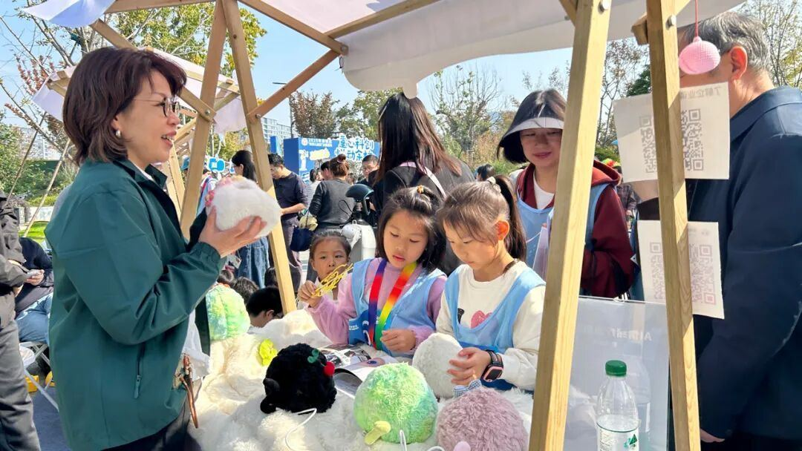
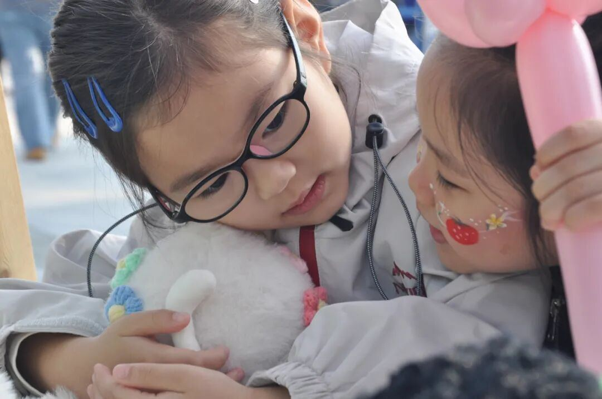
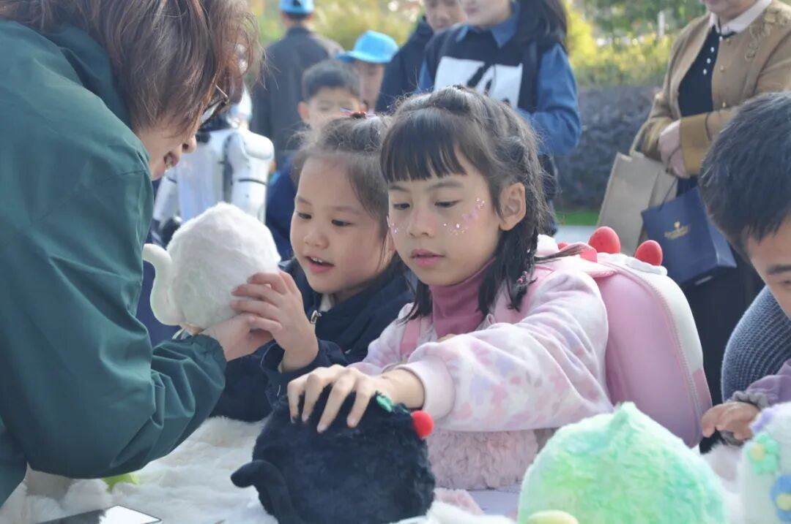

还有的⼩朋友直接向球球“倾诉”烦⼼事：“球球，我觉得作业太多了，根本做不完。”球球回答她：“作业太多，确实挺烦⼼的，球球感受到你压⼒很⼤了，要不我们⼀起列个清单，⼀步⼀步来。”

有些家⻓第⼀次了解到“AI情绪疗愈机器⼈”，听完超级有爱团队成员介绍后，认为球球很有积极意义：“和球球聊聊天，⽐（孩⼦）玩⼿机更让我们放⼼。”


作为⼀家注册在杭州余杭未来科技城的科创企业，超级有爱智能科技始终关注⻘少⼉⼼理健康成⻓。此次受余杭区妇联邀请参与世界⼉童⽇活动，不仅是超级球球⼀次成功的线下展⽰，更是我们践⾏科技向善、服务社区承诺的重要⼀步。
未来，超级有爱将继续秉承“让AI有爱”的使命，在各级政府部⻔的指导与⽀持下，积极探索科技与⼼理健康服务的深度融合，⽤温暖、有爱的AI产品，为构建更加和谐、幸福的家庭与社会贡献科技⼒量。